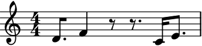

auxjad.Shuffler¶
-
class
auxjad.Shuffler(contents: abjad.core.Container.Container, *, pitch_only: bool = False, preserve_rest_position: bool = False, disable_rewrite_meter: bool = False, omit_time_signatures: bool = False, boundary_depth: Optional[int] = None, maximum_dot_count: Optional[int] = None, rewrite_tuplets: bool = True, processs_on_first_call: bool = True)¶ Shufflertakes an inputabjad.Containerand shuffles or rotates its logical ties or pitches. When shuffling or rotating pitches only, tuplets are supported, otherwise tuplets are not supported.- Example:
Calling the object will output a shuffled selection of the input container.
>>> container = abjad.Container(r"c'4 d'4 e'4 f'4") >>> shuffler = auxjad.Shuffler(container) >>> notes = shuffler() >>> staff = abjad.Staff(notes) >>> abjad.f(staff) \new Staff { \time 4/4 d'4 c'4 f'4 e'4 }

>>> notes = shuffler() >>> staff = abjad.Staff(notes) >>> abjad.f(staff) \new Staff { \time 4/4 c'4 e'4 d'4 f'4 }
To get the result of the last operation, use the property
current_window.>>> notes = shuffler.current_window >>> staff = abjad.Staff(notes) >>> abjad.f(staff) \new Staff { \time 4/4 c'4 e'4 d'4 f'4 }

Calling the object outputs the same result as using the method
shuffle().>>> notes = shuffler.shuffle() >>> staff = abjad.Staff(notes) >>> abjad.f(staff) \new Staff { \time 4/4 e'4 f'4 c'4 d'4 }

Warning
Unlike the other classes in auxjad, the very first call of
Shufflerwill already process the initial container. To disable this behaviour and output the initial container once before shuffling or rotating it, initialise the class with the keyword argumentprocesss_on_first_callset toFalse.>>> container = abjad.Container(r"c'4 d'4 e'4 f'4") >>> shuffler = auxjad.Shuffler(container, ... processs_on_first_call=False, ... ) >>> notes = shuffler() >>> staff = abjad.Staff(notes) >>> abjad.f(staff) \new Staff { \time 4/4 c'4 d'4 e'4 f'4 }

- Example:
Applying the
len()function to the shuffler will return the number of logical ties ofcontents.>>> container = abjad.Container(r"c'4 d'4 e'4 f'4 ~ | f'2 g'2") >>> shuffler = auxjad.Shuffler(container) >>> len(shuffler) 5
Do note that consecutive rests are considered as a single logical tie, so in the example below the
len()function returns5and not6. When shuffling or rotating logical ties, consecutive rests are also shuffled and rotated together.>>> container = abjad.Container(r"c'8. d'4 r8 r8. e'16 f'8.") >>> shuffler = auxjad.Shuffler(container) >>> len(shuffler) 5
- Example:
This class has many keyword arguments, all of which can be altered after instantiation using properties with the same names as shown below. Setting
pitch_onlytoTruewill enable pitch mode; by default, this class shuffles and rotates logical ties, but in pitch mode only pitches are shuffled or rotated. By settingpreserve_rest_positiontoTruethe shuffle and rotation operations will not change the position or duration of rests.disable_rewrite_meterdisables therewrite_meter()mutation which is applied to the container after every call, andomit_time_signatureswill remove all time signatures from the output (both areFalseby default). By default, the first time signature is attached only to the first leaf of the first call (unless time signature changes require it). The propertiesboundary_depth,maximum_dot_count, andrewrite_tupletsare passed as arguments to abjad’srewrite_meter(), see its documentation for more information. By default, calling the object will first return the original container and subsequent calls will process it; setprocesss_on_first_calltoTrueand the looping process will be applied on the very first call.>>> container = abjad.Container( ... r"\time 3/4 c'4 d'4 e'4 \time 2/4 f'4 g'4") >>> shuffler = auxjad.Shuffler(container, ... pitch_only=False, ... preserve_rest_position=True, ... disable_rewrite_meter=False, ... omit_time_signatures=True, ... boundary_depth=0, ... maximum_dot_count=1, ... rewrite_tuplets=False, ... processs_on_first_call=True, ... ) >>> shuffler.pitch_only False >>> shuffler.preserve_rest_position True >>> shuffler.disable_rewrite_meter False >>> shuffler.omit_time_signatures True >>> shuffler.boundary_depth 0 >>> shuffler.maximum_dot_count 1 >>> shuffler.rewrite_tuplets False >>> shuffler.processs_on_first_call True
Use the properties below to change these values after initialisation.
>>> shuffler.pitch_only = True >>> shuffler.preserve_rest_position = False >>> shuffler.disable_rewrite_meter = True >>> shuffler.omit_time_signatures = False >>> shuffler.boundary_depth = 1 >>> shuffler.maximum_dot_count = 2 >>> shuffler.rewrite_tuplets = True >>> shuffler.processs_on_first_call = False >>> shuffler.pitch_only True >>> shuffler.preserve_rest_position True >>> shuffler.disable_rewrite_meter True >>> shuffler.omit_time_signatures False >>> shuffler.boundary_depth 1 >>> shuffler.maximum_dot_count 2 >>> shuffler.rewrite_tuplets True >>> shuffler.processs_on_first_call False
- Example:
By default, the shuffling operation will shuffle logical ties:
>>> container = abjad.Container(r"c'8. d'4 r8 r8. e'16 f'8.") >>> shuffler = auxjad.Shuffler(container) >>> notes = shuffler() >>> staff = abjad.Staff(notes) >>> abjad.f(staff) \new Staff { \time 4/4 r4 r16 e'16 f'8 ~ f'16 d'8. ~ d'16 c'8. }

Setting
pitch_onlytoTrueenables pitch mode, so only pitches are shuffled (and not durations). Note how in the example below the duration of each leaf is the same as the input container.>>> container = abjad.Container(r"c'8. d'4 r8 r8. e'16 f'8.") >>> shuffler = auxjad.Shuffler(container, pitch_only=True) >>> notes = shuffler() >>> staff = abjad.Staff(notes) >>> abjad.f(staff) \new Staff { \time 4/4 f'8. r4 d'8 ~ d'8. ~ c'16 e'8. }

- Example:
Besides shuffling, logical ties and pitches can also be rotated using the
rotate()method. Similarly to shuffling, it can be applied to logical ties or pitches only depending on the propertypitch_only.>>> container = abjad.Container( ... r"\time 3/4 c'16 d'8. ~ d'4 e'4 r4 f'4 ~ f'8.. g'32") >>> shuffler = auxjad.Shuffler(container) >>> notes = shuffler.rotate() >>> staff = abjad.Staff(notes) >>> abjad.f(staff) \new Staff { \time 3/4 d'4.. e'16 ~ e'8. r16 r8. f'16 ~ f'4 ~ f'8 ~ f'32 g'32 c'16 }
>>> container = abjad.Container( ... r"\time 3/4 c'16 d'8. ~ d'4 e'4 r4 f'4 ~ f'8.. g'32") >>> shuffler = auxjad.Shuffler(container, pitch_only=True) >>> notes = shuffler.rotate() >>> staff = abjad.Staff(notes) >>> abjad.f(staff) \new Staff { \time 3/4 d'16 e'8. ~ e'4 r4 f'4 g'4 ~ g'8.. c'32 }

This method can also take the optional parameters
n_rotationsandanticlockwise. The first is an integer setting the number of rotations applied to the material, and the second is a boolean setting the direction of the rotation (defaultFalse).>>> container = abjad.Container( ... r"\time 3/4 c'16 d'8. ~ d'4 e'4 r4 f'4 ~ f'8.. g'32") >>> shuffler = auxjad.Shuffler(container, pitch_only=True) >>> notes = shuffler.rotate(n_rotations=2, anticlockwise=True) >>> staff = abjad.Staff(notes) >>> abjad.f(staff) \new Staff { \time 3/4 f'16 g'8. ~ g'4 c'4 d'4 e'4 ~ e'8.. r32 }
- Example:
If
preserve_rest_positionis set toTrue, the positions of all rests will remain the same after either shuffling and rotation. In pitch mode (whenpitch_onlyis set toTrue), this means that only the pitched notes will be shuffled or rotated, while the rests remain in the exact same place.>>> container = abjad.Container(r"c'8. d'4 r8 r8. e'16 f'8.") >>> shuffler = auxjad.Shuffler(container, ... pitch_only=True, ... preserve_rest_position=True, ... ) >>> notes = shuffler() >>> staff = abjad.Staff(notes) >>> abjad.f(staff) \new Staff { \time 4/4 d'8. f'4 r8 r8. c'16 e'8. }
In logical ties mode, the rests will remain at the same index and will have the same total duration as before, but their position in the bar might vary since the duration of the pitched logical ties preceeding it might change.
>>> container = abjad.Container(r"c'8. d'4 r8 r8. e'16 f'8.") >>> shuffler = auxjad.Shuffler(container, preserve_rest_position=True) >>> notes = shuffler() >>> staff = abjad.Staff(notes) >>> abjad.f(staff) \new Staff { \time 4/4 d'4 e'16 r8. r8 f'8 ~ f'16 c'8. }

- Example:
If
disable_rewrite_meteris set toTrue, then the automatic behaviour of rewriting the leaves according to the meter is disabled.>>> container = abjad.Container(r"c'4 d'8 e'8 f'2") >>> shuffler = auxjad.Shuffler(container, ... disable_rewrite_meter=True, ... ) >>> notes = shuffler() >>> staff = abjad.Staff(notes) >>> abjad.f(staff) \new Staff { \time 4/4 e'8 f'2 c'4 d'8 }
- Example:
To output several shuffled containers at once, use the methods
shuffle_nandrotate_n, inputting the desired number of iterations.rotate_ncan also take the optional argumentsn_rotationsandanticlockwise, similarly torotate().>>> container = abjad.Container(r"c'4 d'8 e'4. f'8. g'16") >>> shuffler = auxjad.Shuffler(container) >>> notes = shuffler.shuffle_n(2) >>> staff = abjad.Staff(notes) >>> abjad.f(staff) \new Staff { \time 4/4 d'8 g'16 c'16 ~ c'8. f'16 ~ f'8 e'4. g'16 f'8. e'4. c'8 ~ c'8 d'8 }

>>> container = abjad.Container(r"c'4 d'8 e'4. f'8. g'16") >>> shuffler = auxjad.Shuffler(container) >>> notes = shuffler.rotate_n(2) >>> staff = abjad.Staff(notes) >>> abjad.f(staff) \new Staff { \time 4/4 d'8 e'4. f'8. g'16 c'4 e'4. f'8 ~ f'16 g'16 c'8 ~ c'8 d'8 }

- Example:
To disable time signatures altogether, initialise this class with the keyword argument
omit_time_signaturesset toTrue(default isFalse), or change theomit_time_signaturesproperty after initialisation.>>> container = abjad.Container(r"\time 3/4 c'16 d'4.. e'4 | r4 f'2") >>> shuffler = auxjad.Shuffler(container, ... omit_time_signatures=True, ... ) >>> notes = shuffler() >>> staff = abjad.Staff(notes) >>> abjad.f(staff) \new Staff { \time 4/4 d'4.. e'16 ~ e'8. f'16 ~ f'4.. r16 r8. c'16 }

Tip
All methods that return an
abjad.Selectionwill add an initial time signature to it. Theshuffle_n()androtate_n()methods automatically remove repeated time signatures. When joining selections output by multiple method calls, useauxjad.remove_repeated_time_signatures()on the whole container after fusing the selections to remove any unecessary time signature changes.- Example:
This class handles time signature changes too:
>>> container = abjad.Container( ... r"\time 3/4 c'8. d'4 r8 r8. \time 2/4 e'16 f'4..") >>> shuffler = auxjad.Shuffler(container) >>> notes = shuffler.shuffle_n(2) >>> staff = abjad.Staff(notes) >>> abjad.f(staff) \new Staff { \time 3/4 e'16 d'8. ~ d'16 f'4.. \time 2/4 c'8. r16 r4 \time 3/4 c'8. f'16 ~ f'4. r8 \time 2/4 r8. d'16 ~ d'8. e'16 }
- Example:
Tuplets are supported when
pitch_onlyisTrue(pitch-only mode).>>> container = abjad.Container( ... r"\time 5/4 r4 \times 2/3 {c'4 d'2} e'4. f'8") >>> shuffler = auxjad.Shuffler(container, pitch_only=True) >>> notes = shuffler() >>> staff = abjad.Staff(notes) >>> abjad.f(staff) \new Staff { \time 5/4 d'4 \times 2/3 { f'4 c'2 } e'4. r8 }

Error
Tuplets are not supported when
pitch_onlyisFalse(logical tie mode).>>> container = abjad.Container( ... r"\time 5/4 r4 \times 2/3 {c'4 d'2} e'4. f'8") >>> shuffler = auxjad.Shuffler(container) >>> notes = shuffler() TypeError: 'contents' contain one ore more tuplets, which are not currently supported by the shuffle method
- Example:
This class can also handle dynamics and articulations.
>>> container = abjad.Container( ... r"<c' e' g'>4--\p d'8-. e'8-. f'4-^\f r4") >>> shuffler = auxjad.Shuffler(container) >>> notes = shuffler.shuffle_n(3) >>> staff = abjad.Staff(notes) >>> abjad.f(staff) \new Staff { \time 4/4 r4 f'4 \f - \marcato d'8 - \staccato <c' e' g'>8 \p - \tenuto ~ <c' e' g'>8 e'8 - \staccato f'4 \f - \marcato d'8 - \staccato <c' e' g'>8 \p - \tenuto ~ <c' e' g'>8 r8 r8 e'8 - \staccato f'4 \f - \marcato r4 e'8 - \staccato d'8 - \staccato <c' e' g'>4 \p - \tenuto }

Tip
The functions
auxjad.remove_repeated_dynamics()andauxjad.adjust_clefs()can be used to clean the output and remove repeated dynamics and unnecessary clef changes.Warning
Do note that elements that span multiple notes (such as hairpins, ottava indicators, manual beams, etc.) can become problematic when notes containing them are split into two. As a rule of thumb, it is always better to attach those to the music after the shuffling process has ended.
- Example:
Use the property
contentsto get the input container upon which the shuffler operates. Notice thatcontentsremains invariant after any shuffling or rotation operations (usecurrent_windowfor the transformed selection of music).contentscan be used to change theabjad.Containerto be shuffled.>>> container = abjad.Container(r"c'4 d'4 e'4 f'4") >>> shuffler = auxjad.Shuffler(container) >>> abjad.f(shuffler.contents) { c'4 d'4 e'4 f'4 }

>>> shuffler() >>> abjad.f(shuffler.contents) { c'4 d'4 e'4 f'4 }

>>> shuffler.contents = abjad.Container(r"cs2 ds2") >>> abjad.f(shuffler.contents) { cs2 ds2 }
- Example:
This function uses the default logical tie splitting algorithm from abjad’s
rewrite_meter().>>> container = abjad.Container(r"c'4. d'8 e'2") >>> shuffler = auxjad.Shuffler(container) >>> notes = shuffler() >>> staff = abjad.Staff(notes) >>> abjad.f(staff) \new Staff { \time 4/4 e'2 c'4. d'8 }
Set
boundary_depthto a different number to change its behaviour.>>> shuffler = auxjad.Shuffler(container, ... boundary_depth=1, ... ) >>> notes = shuffler() >>> staff = abjad.Staff(notes) >>> abjad.f(staff) \new Staff { \time 4/4 e'2 c'4 ~ c'8 d'8 }
Other arguments available for tweaking the output of abjad’s
rewrite_meter()aremaximum_dot_countandrewrite_tuplets, which work exactly as the identically named arguments ofrewrite_meter().- Example:
By default, this class rewrites uses abjad’s
rewrite_meter()mutation.>>> container = abjad.Container(r"c'4 d'8 e'8 f'2") >>> shuffler = auxjad.Shuffler(container) >>> notes = shuffler() >>> staff = abjad.Staff(notes) >>> abjad.f(staff) \new Staff { \time 4/4 e'8 f'8 ~ f'4. c'8 ~ c'8 d'8 }
Set
disable_rewrite_metertoTruein order to disable this behaviour.>>> container = abjad.Container(r"c'4 d'8 e'8 f'2") >>> shuffler = auxjad.Shuffler(container, ... disable_rewrite_meter=True, ... ) >>> notes = shuffler() >>> staff = abjad.Staff(notes) >>> abjad.f(staff) \new Staff { \time 4/4 e'8 f'2 c'4 d'8 }

- Example:
The instances of
Shufflercan also be used as an iterator, which can then be used in a for loop. Note that unlike the methodsshuffle_n()androtate_n(), time signatures are added to each window returned by the shuffler. Use the functionauxjad.remove_repeated_time_signatures()to clean the output when usingShufflerin this way. It is also important to note that abreakstatement is needed when usingShuffleras an iterator. The reason is that shuffling is a process that can happen indefinitely (unlike some of the other classes in this package).>>> container = abjad.Container(r"\time 3/4 c'4 d'4 e'4") >>> shuffler = auxjad.Shuffler(container) >>> staff = abjad.Staff() >>> for window in shuffler: ... staff.append(window) ... if abjad.inspect(staff).duration() == abjad.Duration((9, 4)): ... break >>> auxjad.remove_repeated_time_signatures(staff) >>> abjad.f(staff) \new Staff { \time 3/4 e'4 c'4 d'4 d'4 c'4 e'4 c'4 e'4 d'4 }
Methods
__init__(contents, *[, pitch_only, …])Initialises self.
rotate(*[, n_rotations, anticlockwise])Rotates logical ties or pitches of
contents.rotate_n(n, *[, n_rotations, anticlockwise])Goes through
niterations of the pitch shuffling process and outputs a singleabjad.Selection.shuffle()Shuffles logical ties or pitches of
contents.shuffle_n(n)Goes through
niterations of the shuffling process and outputs a singleabjad.Selection.Attributes
boundary_depthSets the argument
boundary_depthof abjad’srewrite_meter().contentsThe
abjad.Containerto be shuffled.current_windowRead-only property, returns the result of the last operation.
disable_rewrite_meterWhen
True, the durations of the notes in the output will not be rewritten by therewrite_metermutation.maximum_dot_countSets the argument
maximum_dot_countof abjad’srewrite_meter().omit_time_signaturesWhen
True, the output will contain no time signatures.pitch_onlyWhen
True, only the pitches will be shuffled or rotated while the durations remain the same.preserve_rest_positionWhen
True, shuffle operations will preserve rest positions and durations.processs_on_first_callIf
Truethen thecontentswill be processed in the very first call.rewrite_tupletsSets the argument
rewrite_tupletsof abjad’srewrite_meter().